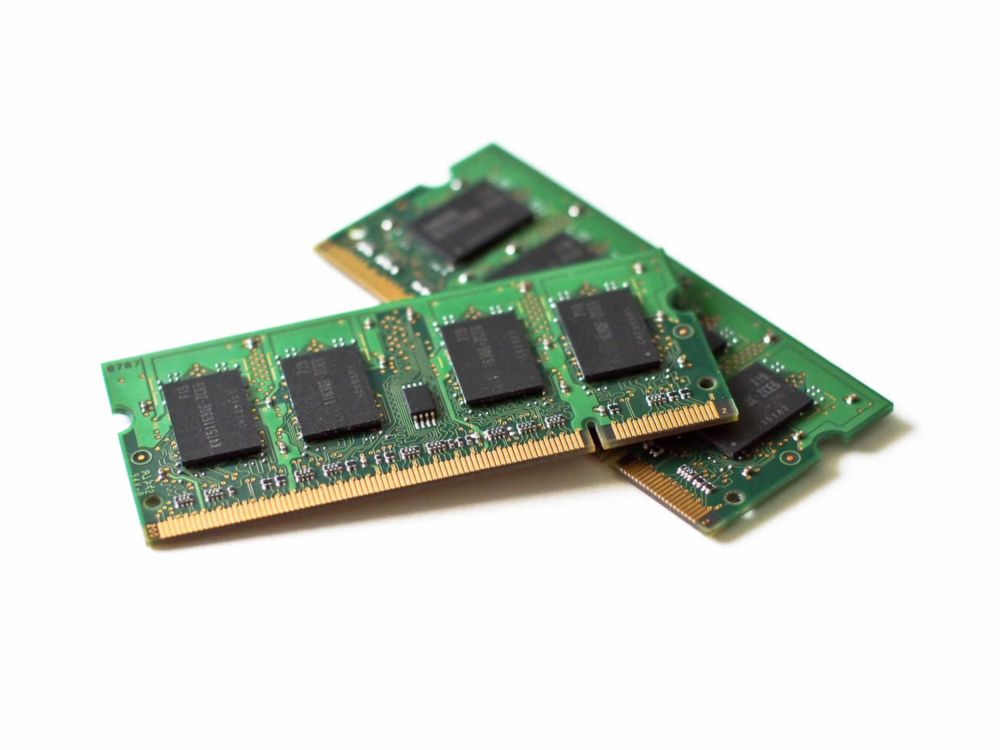

UNIDA 1
"Arquitectura de Computo"
1.1 Modelos De Arquitecturas de Computo
"1.1.1 Clasicas"
Estas arquitecturas se desarrollaron en las primeras computadoras electromecánicas y de tubos de vacío. Aun son usadas en procesadores empotrados de gama baja y son la base de la mayoría de las arquitecturas modernas.
Existen dos modelos que sobresalen en este tipo de arquitecturas:
* Von Newman
* Harvard
Conoce Los Modelos que sobresalen de esta arqquitectura
"1.1.2 Segmentadas"
Las arquitecturas segmentadas o con segmentación del cauce buscan mejorar el desempeño realizando paralelamente varias etapas del ciclo de instrucción al mismo tiempo. El procesador se divide en varias unidades funcionales independientes y se dividen entre ellas el procesamiento de las instrucciones. Para comprender mejor esto, supongamos que un procesador simple tiene un ciclo de instrucción sencillo consistente solamente en una etapa de búsqueda del código de instrucción y en otra etapa de ejecución de la instrucción. En un procesador sin segmentación del cauce, las dos etapas se realizarían de manera secuencial para cada una de las instrucciones.
"1.1.3 Multiprocesamiento"
Cuando se desea incrementar el desempeño más aya de lo que permite la técnica de segmentación del cauce (limite teórico de una instrucción por ciclo de reloj), se requiere utilizar más de un procesador para la ejecución del programa de aplicación.
Las CPU de multiprocesamiento:
* SISO – (Single Instruction, Single Operand ) computadoras independientes
* SIMO – (Single Instruction, Multiple Operand ) procesadores vectoriales
* MISO – (Multiple Instruction, Single Operand ) No implementado
* MIMO – (Multiple Instruction, Multiple Operand ) sistemas SMP, Clusters.
Regresar
1.2 Analisis De Componentes
"1.2.1 CPU"
La unidad central de procesamiento es el hardware dentro de un computador u otros dispositivos programables, que interpreta las instrucciones de un programa ordenador mediante la realización de las operaciones básicas aritméticas, lógicas y de entrada/salida del sistema. Una computadora puede tener más de una cpu esto se llama multiprocesamiento. Todas las CPU modernas son microprocesadores, lo que significa que contienen un solo chip. Algunos circuitos integrados pueden contener varias cpus en un solo chip; estos IC son denominados procesadores multi-core. Un CI que contiene una cpu también puede contener los dispositivos periféricos, y otros componentes de un sistema informático; esto se llama un sistema de chip .
"1.2.1.1 Arquitecturas"
Tanto la miniaturización como la estandarización de los CPU han aumentado la presencia de estos dispositivos digitales en la vida moderna mucho más allá de las aplicaciones limitadas de máquinas de computación dedicadas. Los microprocesadores modernos aparecen en todo, desde automóviles, televisores, neveras, calculadoras, aviones, hasta teléfonos móviles o celulares, juguetes, entre otros.
"1.2.1.2 Tipos"
Los primeros CPU fueron diseñados a la medida como parte de una computadora más grande, generalmente una computadora única en su especie. Sin embargo, este costoso método de diseñar los CPU a la medida, para una aplicación particular, ha desaparecido en gran parte y se ha sustituido por el desarrollo de clases de procesadores baratos y estandarizados adaptados para uno o muchos propósitos. Esta tendencia de estandarización comenzó generalmente en la era de los transistores discretos, computadoras centrales, y microcomputadoras, y fue acelerada rápidamente con la popularización del circuito integrado (IC), éste ha permitido que sean diseñados y fabricados CPU más complejos en espacios pequeños (en la orden de milímetros).
"1.2.1.3 Características"
Desde mediados de los años 1970, los microprocesadores de un solo chip han reemplazado casi totalmente todos los tipos de CPU, y hoy en día, el término "CPU" es aplicado usualmente a todos los microprocesadores.
"1.2.1.4 Funcionamiento"
"Alu"
La unidad aritmético lógica, también conocida como ALU (siglas en inglés de arithmetic logic unit), es un circuito digial que calcula operaciones aritméticas (como suma, resta, multiplicación, etc.) y operaciones lógicas (si, y, o, no), entre dos números. Muchos tipos de circuitos electrónicos necesitan realizar algún tipo de operación aritmética, así que incluso el circuito dentro de un reloj digital tendrá una ALU minúscula que se mantiene sumando 1 al tiempo actual, y se mantiene comprobando si debe activar el sonido de la alarma.
"Unidad De Control"
La unidad de control es uno de los tres bloques funcionales principales en los que se divide una unidad central de procesamiento (CPU). Los otros dos bloques son la unidad de procesos y el bus de entrada/salida.Su función es buscar las instrucciones en la memoria principal, decodificarlas (interpretación) y ejecutarlas, empleando para ello la unidad de proceso. Existen 2 tipos de unidades de control, las cableadas, usadas generalmente en máquinas sencillas, y las micro-programadas, propias de máquinas más complejas. En el primer caso, los componentes principales son el circuito de lógica secuencial, el de control de estado, el de lógica y el de emisión de reconocimiento de señales de control. En el segundo caso, la micro-programación de la unidad de control se encuentra almacenada en una micro-memoria, a la cual se accede de manera secuencial para posteriormente ir ejecutando cada una de las micro-instrucciones.
"Registros"
Dentro de un microprocesador existe un componente llamado registro de información, que almacena temporalmente los valores de los datos a los que se accede con frecuencia durante el proceso. Los registros, de importancia primordial dentro de la jerarquía de memoria de la computadora, se utilizan para almacenar sólo los valores de los datos, comandos, estados binarios y otras instrucciones que definen qué datos se procesan y cómo.
"Buses"
En informática, a un bus se le denomina todo un conjunto de cables que se conectan entre los componentes de un computador con el fin de comunicar datos direcciones y comandos entre ellos. Existen dos tipos de buses, en paralelo y en serie.
"1.2.2. MEMORIA"
En informática, la memoria es el dispositivo que retiene, memoriza o almacena datos informáticos durante algún intervalo de tiempo. La memoria proporciona una de las principales funciones de la computación moderna: el almacenamiento de información y conocimiento. Es uno de los componentes fundamentales de la computadora, que interconectada a la unidad central de procesamiento (CPU, por las siglas en inglés de Central Processing Unit) y los dispositivos de entrada/salida, implementan lo fundamental del modelo de computadora de la arquitectura de von Neumann.
"1.2.2.1 Memoria Principal"
Memoria primaria (MP), memoria principal, memoria central o memoria interna es la memoria de la computadora donde se almacenan temporalmente tanto los datos como los programas que la unidad central de procesamiento (CPU) está procesando o va a procesar en un determinado momento. Por su función, la MP debe ser inseparable del microprocesador o CPU, con quien se comunica a través del bus de datos y el bus de direcciones. El ancho del bus determina la capacidad que posea el microprocesador para el direccionamiento de direcciones en memoria.
"1.2.2.2 Memoria Caché"
En informática, la caché es la memoria de acceso rápido de una computadora, que guarda temporalmente las últimas informaciones procesadas. La memoria caché es un búfer especial de memoria que poseen las computadoras, que funciona de manera similar a la memoria principal, pero es de menor tamaño y de acceso más rápido. Es usada por el microprocesador para reducir el tiempo de acceso a datos ubicados en la memoria principal que se utilizan con más frecuencia.
"1.2.3 DISPOSITIVOS I/O"
"1.2.3.1 Modulos I/O"
Los dispositivos de entrada convierten la información en señales eléctricas que se almacenan en la memoria central. Los dispositivos de entrada típicos son los teclados, otros son: lápices ópticos, palancas de mando (joystick), CD-ROM, discos compactos (CD), etc. Hoy en día es muy frecuente que el usuario utilice un dispositivo de entrada llamado ratón que mueve un puntero electrónico sobre una pantalla que facilita la interacción usuario-máquina.
"1.2.3.2 Interrupciones"
El problema con E/S programada es que el CPU tiene que esperar un tiempo considerable a que el módulo de E/S en cuestión esté preparado para recibir o transmitir los datos. El CPU debe estar comprobando continuamente el estado del módulo de E/S. Se degrada el desempeño del sistema. Una alternativa es que el CPU tras enviar una orden de E/S continue realizando algún trabajo útil. El módulo de E/S interrumpirá al CPU para solicitar su servicio cuando esté preparado para intercambiar datos. El CPU ejecuta la transferencia de datos y después continúa con el procesamiento previo.
"1.2.3.3 Acceso Directo a Memoria"
El acceso directo a memoria (DMA, del inglés direct memory access) permite a cierto tipo de componentes de una computadora acceder a la memoria del sistema para leer o escribir independientemente de la unidad central de procesamiento (CPU) principal. Muchos sistemas hardware utilizan DMA, incluyendo controladores de unidades de disco, tarjetas gráficas y tarjetas de sonido. DMA es una característica esencial en todos los ordenadores modernos, ya que permite a dispositivos de diferentes velocidades comunicarse sin someter a la CPU a una carga masiva de interrupciones.

"1.2.3.4 Canales"
El canal de entrada y salida representa una ampliación del concepto de DMA. Un canal de entrada y salida puede ejecutar instrucciones de entrada y salida, lo que le confiere un control completo sobre las operaciones de entrada y salida. Un canal selector controla varios dispositivos de velocidad elevada y en un instante dado, se dedica a transferir datos a uno de esos dispositivos, es decir el canal de entrada y salida selecciona un dispositivo y efectúa la transferencia de datos. Cada dispositivo o pequeño grupo de dispositivos es manejado por un controlador o módulo de E/S, así el canal de entrada y salida se utiliza en lugar de la CPU para controlar estos controladores de E/S. Un canal multiplexor puede manejar la entrada y salida de varios dispositivos al mismo tiempo. Para dispositivos de velocidad reducida, un multiplexor de byte acepta o transmite caracteres tan rápido como es posible a varios dispositivos.
"1.2.4 Buses"
Consta de un camino que permite comunicar selectivamente un cierto número de componentes o dispositivos, de acuerdo a unas ciertas reglas o normas de conexió
"1.2.4.1 Tipos"
• SERIE y PARALELO: los primeros transmiten bit a bit y los segundos varios bits a la vez.
• MULTIPLEXADOS y NO MULTIPLEXADOS o DEDICADOS: los multiplexados realizan diferentes funciones en función de las necesidades del momento.
• CENTRALIZADOS y DISTRIBUIDOS: necesidad de determinar qué elemento transmite y cuál recibe. Generalmente existe administración centralizada por la CPU o procesador.
• SÍNCRONOS y ASÍNCRONOS (temporización): cómo ocurren los diferentes eventos (comienzo, fin,...) implicados en la transmisión de información. Utilización de una señal de reloj (comunicación síncrona) o unas líneas de protocolo (comunicación asíncrona).
"1.2.4.2 Estructura"
Los buses se componen de líneas eléctricas que transmiten un “0” (cero voltios) o un “1” (más de cero voltios). Líneas/bus de datos: camino para transferir datos entre el resto de componentes de un computador. Su anchura (número de líneas eléctricas) suele ser una potencia de dos (8=23, 16=24, 32=25, 64=26,...).Estructura de los Buses Líneas/bus de direcciones: designan la posición/dirección de los datos. Son salidas de la CPU/procesador y determinan capacidad de direccionamiento. Líneas/bus de control: controlan el acceso y uso de las líneas/buses anteriores.

"1.2.4.3 Jerarquías"
Compatibilidad entre buses:
• Sólo si son eléctricamente idénticos. Las características de los diferentes tipos de buses deben estar normalizadas. Ejemplo: bus PCI, AGP, USB, FireWire...Jerarquías de Buses
• Antiguamente sólo existía un bus principal que lo conectaba todo: bus del sistema.
• Actualmente existe un conjunto de buses conectados entre sí y formando una jerarquía.
• Facilita la mejora del rendimiento de todo el computador al agrupar dentro de los diferentes tipos de buses aquellos componentes del ordenador que tienen aproximadamente la misma velocidad de transmisión de la información.
• Mientras más lejos del CPU, buses más lentos y normalmente de menos líneas de datos. Jerarquías de Buses
"1.2.4.4 Interrupciones"
En el contexto de la informática, una interrupción (del inglés Interrupt Request, también conocida como petición de interrupción) es una señal recibida por el procesador de un ordenador, indicando que debe "interrumpir" el curso de ejecución actual y pasar a ejecutar código específico para tratar esta situación. Una interrupción es una suspensión temporal de la ejecución de un proceso, para pasar a ejecutar una subrutina de servicio de interrupción, la cual, por lo general, no forma parte del programa, sino que pertenece al sistema operativo o al BIOS). Una vez finalizada dicha subrutina, se reanuda la ejecución del programa.